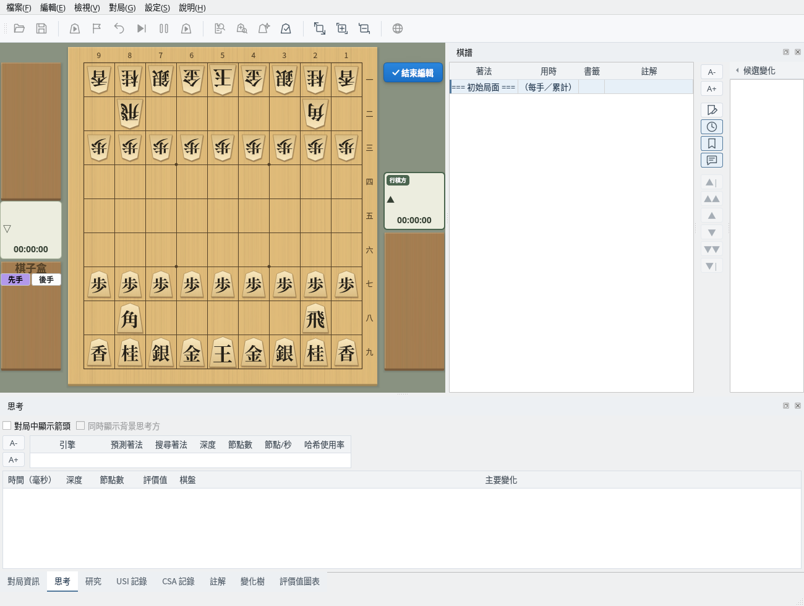
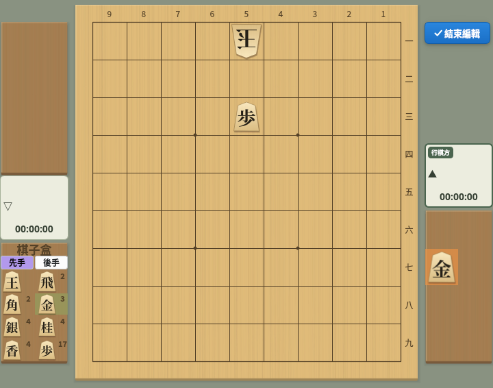
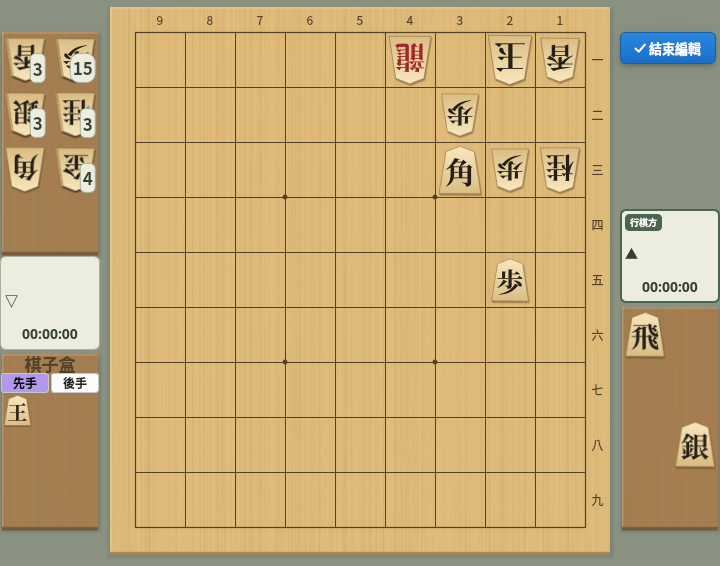
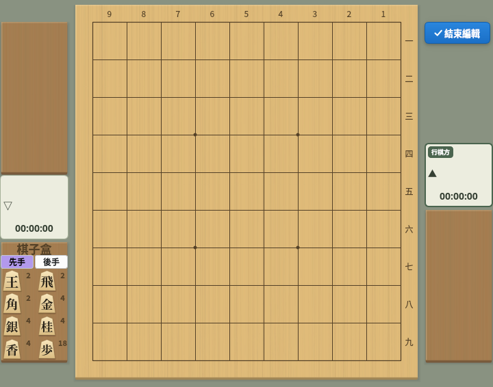
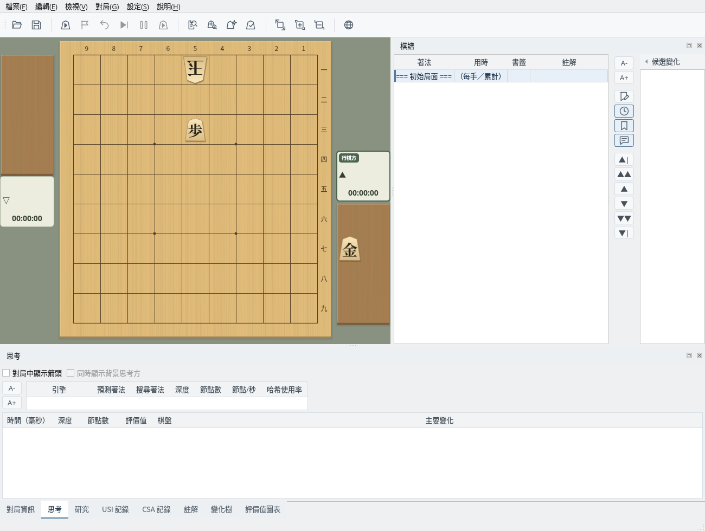

自由擺放棋子，建立任意局面
截圖於 Linux 上以繁體中文介面擷取。
以目前顯示的局面為基礎，移動或擺放棋子來建立局面
選擇「編輯」→「開始編輯局面」開始編輯。目前顯示的局面就是編輯的起點，棋譜只保留「=== 初始局面 ===」一行（評價值圖表也會清除）。如果棋譜有未儲存的修改，會先詢問是否儲存。
編輯期間，棋盤右上方顯示「✓ 結束編輯」按鈕，左下方顯示棋子盒。

編輯中：棋盤右上方顯示「結束編輯」按鈕，左下方顯示棋子盒
用滑鼠進行如下操作。棋子放到棋盤或駒台上後，歸屬於該位置的一方（放到對方駒台上即成為對方的持駒）。
用「將所有棋子放入棋子盒」清空棋盤，在棋子盒中選擇「後手」並把玉放到 5一，再切換到「先手」把步放到 5三，然後把金放到先手的駒台上，就完成了一道頭金一手詰的題目。

用棋子盒建立的局面：後手玉 5一、先手步 5三、先手持駒金
從選單呼叫常用佈局，並切換行棋方
選擇「編輯」→「平手佈局」可回到平手的初始佈局。
選擇「編輯」→「詰棋佈局」會擺出一道詰棋例題。其餘棋子全部成為玉方（後手）的持駒，攻方的玉放入棋子盒，這是詰棋的慣例。可以從這裡移動棋子來創作題目。

詰棋佈局：其餘棋子是玉方的持駒，攻方的玉在棋子盒中
選擇「編輯」→「將所有棋子放入棋子盒」，會把棋盤和駒台上的棋子全部放入棋子盒。用於從空棋盤開始建立局面。

將所有棋子放入棋子盒：棋盤和駒台清空，棋子盒顯示數量
選擇「編輯」→「切換行棋方」，可在先手和後手之間切換下一手的一方（行棋方）。對局者欄上帶有「行棋方」標記的一方下一手。
將建立的局面作為初始局面，用於對局和研究
按一下「✓ 結束編輯」按鈕（或選擇「編輯」→「結束編輯局面」）結束編輯後，建立的局面會成為棋譜的初始局面，棋子盒也會消失。
可以從這個局面開始對局（初始局面選擇「目前局面」）、研究、搜尋詰棋等。開始對局時，棋盤上需要先手和後手各有一枚玉。

結束編輯後：建立的局面成為初始局面